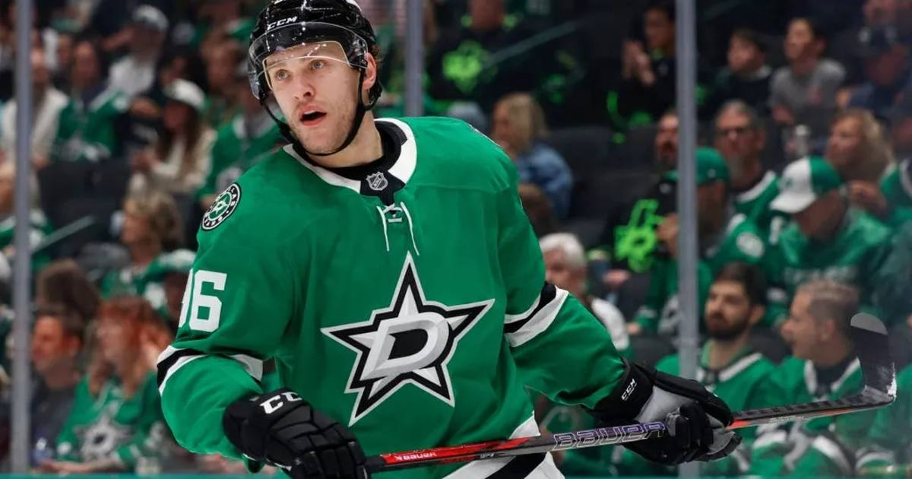

Rantanen Caps Hat Trick With OT Winner as Stars Snap Bruins' Streak
Mikko Rantanen scored all three — including a power-play backhand at 3:52 of overtime — to lift Dallas 3-2 over Boston and end the Bruins' five-game win streak.

One man, three goals, two points.
Mikko Rantanen capped his 11th career hat trick with a power-play goal at 3:52 of overtime, lifting the Dallas Stars to a 3-2 win over the Boston Bruins at American Airlines Center on Tuesday. It snapped Boston's five-game win streak.
How it happened
Dallas never led in regulation. Rantanen tied it at 2:50 of the second off a rebound, then struck again at 13:38 of the third to make it 2-2. In overtime, after Pavel Zacha took a slashing penalty, Rantanen took a pass from Miro Heiskanen down low, held the puck — coach Glen Gulutzan counted about 60 seconds — and tucked a backhand over Jeremy Swayman's glove on the 4-on-3.
Jason Robertson had two assists, Jake Oettinger made 18 saves, and the Stars won their third straight (5-3-1). Matthew Poitras and James Hagens scored for Boston (7-2-1), which finished a four-game road trip 3-0-1.
The history
Rantanen became the fourth Stars player to finish a hat trick in overtime since the franchise moved to Dallas in 1993-94. The goal was the 321st of his career, tying Olli Jokinen for third among Finnish players in NHL history — behind only Teemu Selänne (684) and Jari Kurri (601).
Sources: NHL.com · Reuters · Dallas Sports Journal
Gear up: Sports category post → [Fanatics](https://fanatics.93n6tx.net/WOLjqe): via Fanatics